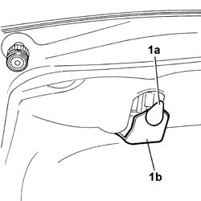
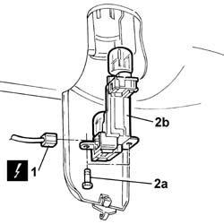
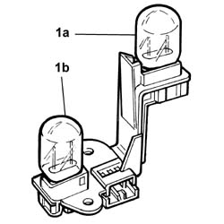

5540A78 Bulb for one rear fog lamp or reversing light in left or right rear light cluster - R.R.
- Path
- Procedures > 55 ELECTRICAL EQUIPMENT > 5540 EXTERIOR LIGHTING > 5540A lighting > 5540A78 Bulb for one rear fog lamp or reversing light in left or right rear light cluster - R.R.
- Kind
- repair procedure (removal / refitting; the operation number is the code)
- Applies to
- all engines; all production periods
- Interactive page
- https://sloeber94.github.io/elrnDB-lThss/en/#/148463
Applies to: all engines; all production periods
 Removing
Removing
 Refitting
Refitting- Disconnect the negative battery terminal.
1. Turn the key (1a) and open the access flap (1b).

Applies to: all engines; all production periods
1. Disconnect the electrical connector.
 | Description | Connector |
|---|---|---|
1 | Left rear light cluster (moving section on boot lid) | F035 |
| Description | Connector |
|---|---|---|
1 | Right rear light cluster (moving section on boot lid) | F036 |
2. Undo the fixing bolt (2a) and remove the bulb unit (2b).

Applies to: all engines; all production periods
1. Release the bulb for the reversing lights (1a) or the rear fog lamps (1b) and remove it from the housing.

Applies to: all engines; all production periods
Refitting
Removing- Fit the bulb removed in the housing.
- Fit the bulb unit in the housing and tighten the fixing bolt.
- Connect the electrical connector.
| Description | Connector |
|---|---|---|
. | Left rear light cluster (moving section on boot lid) | F035 |
| Description | Connector |
|---|---|---|
. | Right rear light cluster (moving section on boot lid) | F036 |
- Close the bulb unit access flap.
- Connect the negative battery terminal.